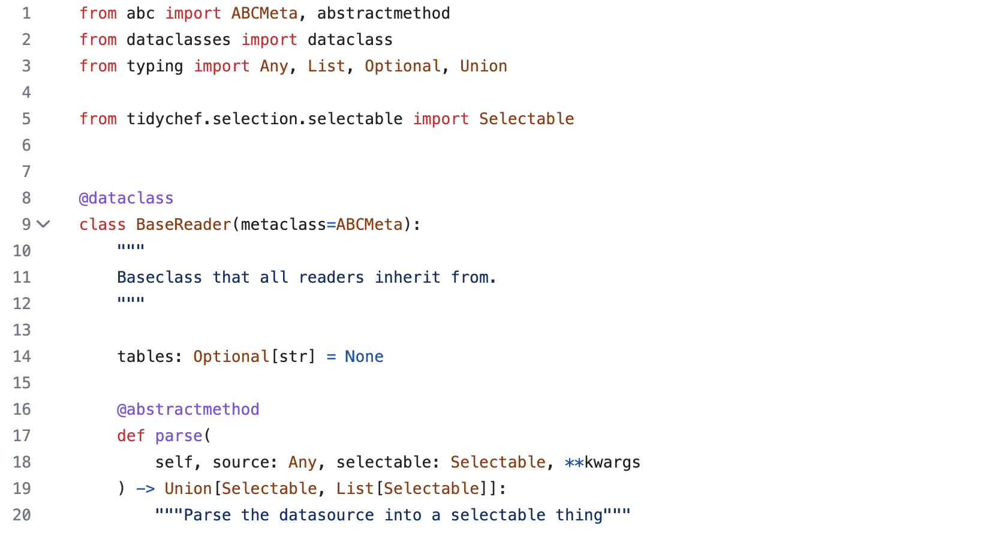

Custom Data Sources#
This document will explain how to extend tidychef to ingest additional tabulated data formats.
We’ll start by explaining how the acquire module works.
How acquire actually works#
So the first thing to understand is that all the functions accessible via the acquire module are really just wrappers around a single function, the acquirer function located in tidychef.acquire.main.
Lets have a look at the method signature for acquirer.
def acquirer(
source: Any,
reader: BaseReader,
selectable: Selectable,
pre_hook: Optional[Callable] = None,
post_hook: Optional[Callable] = None,
**kwargs
) -> Union[List[Selectable], Selectable]:
Now lets looks at one of the functions provided by the acquire module. In this instance we’ll look at acquire.csv.local.
Note: I’ve removed the docstring to better make this point.
def local(
source: Union[str, Path],
selectable: Selectable = CsvSelectable,
pre_hook: Optional[Callable] = None,
post_hook: Optional[Callable] = None,
**kwargs
) -> CsvSelectable:
return acquirer(
source,
LocalCsvReader(),
selectable,
pre_hook=pre_hook,
post_hook=post_hook,
**kwargs
)
So the acquire.csv.local just sets two values and calls acquirer with the arguments provided, the values set are:
Sets a default selectable (which a user can override).
Specifies which implementation of BaseReader is being used to parse the data.
And all acquire functions follow this pattern, they are all just conveniences wrappers.
What this means#
The acquire functions just call
acquirer.acquirerjust specifies a data source, something that implementsBaseReaderand an appropriateSelectable.
Therefore, to get a new data source into tidychef you just need to create a new implementation of BaseReader and call acquirer with it and an appropriate Selectable.
Base Reader#
To create a reader we need to create a new class that extends BaseReader and implements the methods as show below.

So really all we need to do to ingest a new data format is populate a single parse method that:
Takes something as a source.
Populates a tidychef selectable or list of.
Python List Reader#
For our example we’ll use a simple list of lists to represent a table.
This is a mock up of the table we’re going to be ingesting.
A |
B |
C |
D |
E |
|---|---|---|---|---|
Age Range |
Male |
Female |
||
1-20 |
10 |
5 |
||
21-40 |
5 |
24 |
||
41-60 |
21 |
9 |
||
And the following is the same thing expressed as python list of lists.
list_data = [
["", "", "", "", ""],
["", "Age Range", "Male", "Female", ""],
["", "1-20", "10", "5", ""],
["", "21-40", "5", "24", ""],
["", "41-60", "21", "9", ""],
["", "", "", "", ""]
]
Now we have a source, lets write our reader implementation (we’ll explain the logic after the code).
from typing import List
from tidychef.acquire.base import BaseReader
from tidychef.selection import Selectable
from tidychef.models.source.cell import Cell
from tidychef.models.source.table import Table
class ExampleReader(BaseReader):
def parse(self, source: List[List[str]], selectable: Selectable) -> Selectable:
table = Table()
for y, row in enumerate(source):
for x, cell_value in enumerate(row):
table.add_cell(
Cell(x=x, y=y, value=str(cell_value))
)
return selectable(table, source="Example python list")
All readers must return either (a) a populated selectable or (b) a list of populated selectable (see last line of example).
A selectable is created from a table
tidychef.models.source.table.Table, a source (typically a url or filename) and (where appropriate) the table name.It’s a class, the first argument must be
self.The
Tableis populated via theadd_cell()method here though can also just pass a complete list ofCellobjects into theTableconstructor.A
Cellmust be created from x (column index) y (row index) and the contents of the tabular cell.It’s not actually necessary here but tidychef deals in cell values as type
strby default so the cast to str is something you’ll almost certainly want to do.
There are likely more efficient ways to load data in but this is a consciously simple pattern. Any tabulated source than can be read by python can be iterated, anything that can be iterated can be read into tidychef via this mechanism.
Now lets try our new reader:
from tidychef import preview
from tidychef.acquire.main import acquirer
table: Selectable = acquirer(list_data, ExampleReader(), Selectable)
preview(table)
Unnamed Table
| A | B | C | D | E | |
| 1 | |||||
| 2 | Age Range | Male | Female | ||
| 3 | 1-20 | 10 | 5 | ||
| 4 | 21-40 | 5 | 24 | ||
| 5 | 41-60 | 21 | 9 | ||
| 6 |
At which point the usual suite of methods are accessible, eg:
preview(table.excel_ref("C"))
| Unnamed Selection: 0 |
Unnamed Table
| A | B | C | D | E | |
| 1 | |||||
| 2 | Age Range | Male | Female | ||
| 3 | 1-20 | 10 | 5 | ||
| 4 | 21-40 | 5 | 24 | ||
| 5 | 41-60 | 21 | 9 | ||
| 6 |